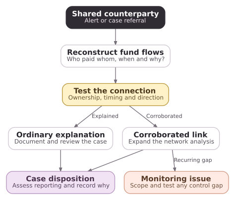

Three cases share a counterparty. What evidence warrants a network investigation?
Test whether a shared counterparty or identifier indicates common control. Preserve contrary evidence and the rationale for expanding or closing the investigation.
A shared counterparty can connect several cases, but it can also be a service used by unrelated customers. Build a timeline, test what the parties actually share and preserve evidence that weakens the suspected connection.
Two decisions then follow. The investigator documents the case disposition and reporting rationale. The monitoring owner tests whether a recurring gap affects a wider population.

A common identifier supports a hypothesis. The investigator decides how far the evidence justifies expanding it. Reporting and control remediation have separate owners.
| Step | Action | Who acts | Evidence or outcome |
|---|---|---|---|
1Understand the business | Reconstruct the normal use of the account and the sequence from incoming e-Transfers to virtual-asset conversion. | AML investigator | A timeline with amounts, direction, counterparties and customer context. |
2Identify the risks | Test whether a shared counterparty links the accounts or simply serves many unrelated customers. | Investigator and case reviewer | Evidence for each explanation, including material contrary facts and missing records. |
3Design the controls | Set the grounds for widening the case. Route a recurring monitoring gap to its control owner as a separate issue. | Investigations lead | A scoped case referral and, where relevant, a distinct control issue. |
4Leverage technology | Link permitted identifiers across alerts and transactions. Verify material matches in the original records and flag uncertainty. | Monitoring analyst | A reproducible relationship map with source, date and confidence for each material link. |
5Maintain human accountability | Document closure, further inquiry or the reporting decision. Set a retest date for any separate monitoring defect. | Authorized AML decision-maker and monitoring owner | A reasoned case disposition and a named owner for any wider review. |
Test whether a shared counterparty or identifier indicates common control. Preserve contrary evidence and the rationale for expanding or closing the investigation.
Wider investigation consumes capacity and can disrupt legitimate customers. Triage by link strength, flow of funds and potential harm while preserving significant cross-case leads.
Several customers using the same exchange offers little evidence of coordination. A common funding source, well-aligned timing and onward transfers to related parties can support a wider inquiry. Record which features also have plausible routine explanations.
Cases spanning many channels or counterparties need an owner for the consolidated timeline. A handoff should identify established links, unresolved questions and the next source likely to answer them, so the receiving investigator can build on existing evidence.
Sample closed and escalated cases. Ask another investigator to reconstruct the sequence and identify what supports the disposition. Classify failures to reproduce it as missing data, unexplained inference or inadequate review so the appropriate team can act.
A case may expose a missing channel, shared identifier or flawed rule assumption. Send the specific gap to the rule owner and test any revision against known cases and ordinary activity to see what it captures and how many additional false positives it creates.
Treat a link between accounts as a hypothesis. Establish what the parties share, test legitimate explanations and record the evidence behind the decision to widen or close the inquiry.
| Trigger | Control | Evidence |
|---|---|---|
| Several accounts transact with one counterparty. | Check whether it is a common service provider and whether timing, amounts and fund direction support a stronger link. | Annotated timeline, counterparty role, alternative explanation and source dates. |
| Funds move through several payment channels. | Reconcile amounts, identifiers and timestamps across channels before combining cases. | Source entries, matched transaction references and reconciliation exceptions. |
| A cluster of cases exposes a recurring monitoring gap. | Assess the individual cases promptly and refer the separate control issue to its owner for testing. | Case dispositions, rule version, affected population and a tracked control issue. |
Share of sampled complex-case referrals where an independent reviewer could reproduce both the material links and the disposition from the recorded evidence.
Several e-Transfers precede virtual-asset conversion and two other customers share a counterparty. Compare timelines, commercial explanations and earlier alerts. Decide reporting and any monitoring-rule defect separately.
| Role | Question | Evidence | Decision or action |
|---|---|---|---|
| Regulators | Can a reviewer reconstruct the grounds for suspicion from the transaction facts? | Narrative, chronology, material transactions, sources and disposition. | Review reporting quality and whether decisions have a consistent evidential basis. |
| Boards & executives | As throughput improves, are material links and residual exposure still being identified? | Age of high-risk cases, independent QA, cross-case referrals and verified fixes. | Resource complex investigations and set risk tolerance without rewarding individual filing volumes. |
| Business & operations | Which transaction fields are lost or delayed before monitoring? | Source-to-monitoring reconciliations, field definitions and latency logs. | Repair the feed and determine the backfill and replay window. |
| AML investigators | Could the shared counterparty be a common service provider? | KYC, counterparty role, time relationships, on-chain confidence labels and counterevidence. | Document uncertainty and choose closure, complex-case referral or STR assessment. |
| Customers & victims | What information can clarify a legitimate transaction? | Purpose, counterparty relationship, supporting records and prior communications. | Submit clarifying evidence through an approved channel and follow up on an unresolved service issue. |
| External partners | What facts allow a receiving team to act on a referral? | Reference IDs, dates, links, provenance, permitted scope and acknowledgement. | Validate links within authority and return permitted findings and outstanding gaps. |